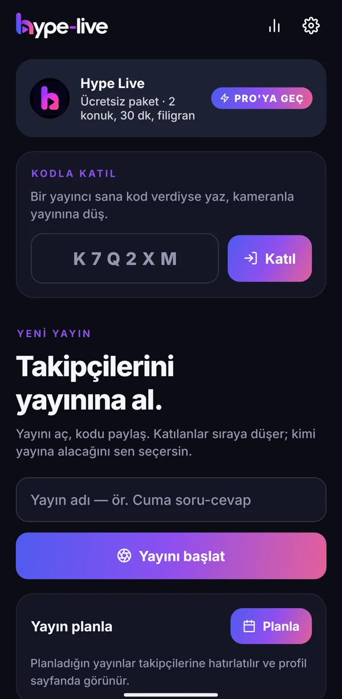
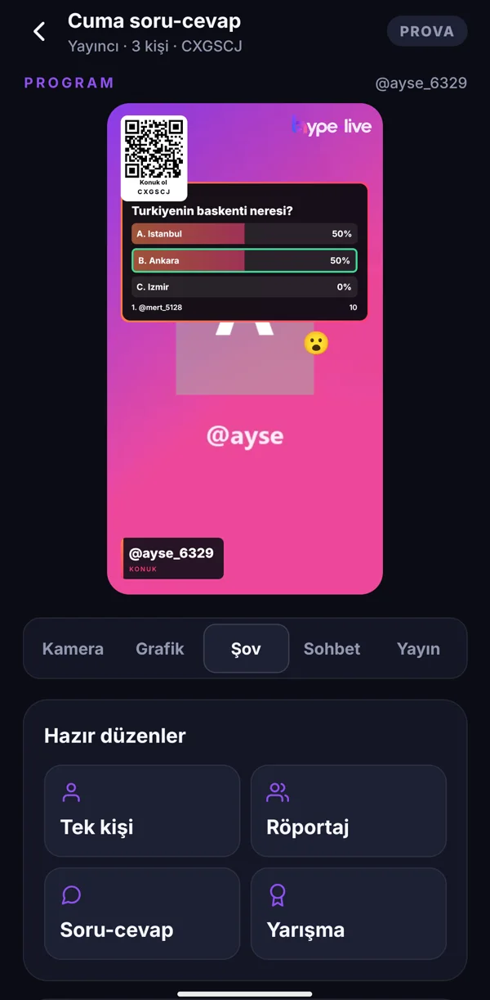
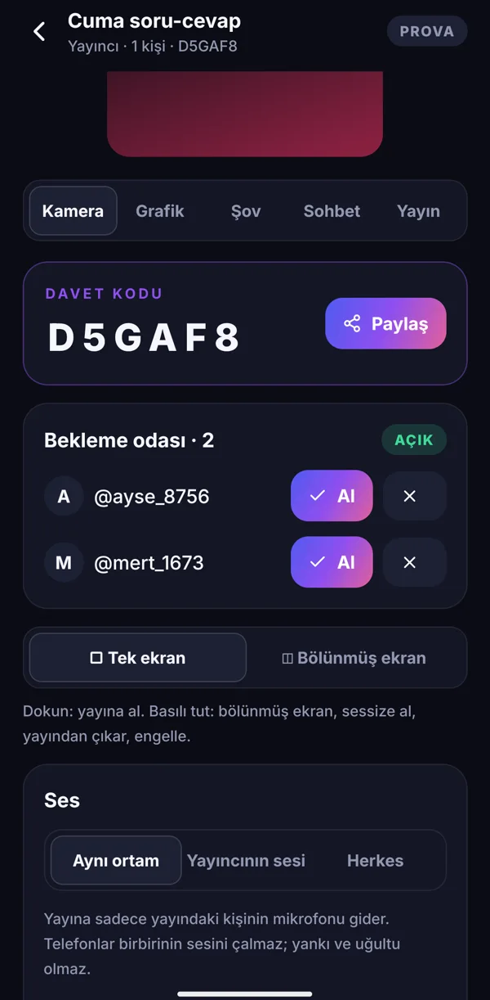
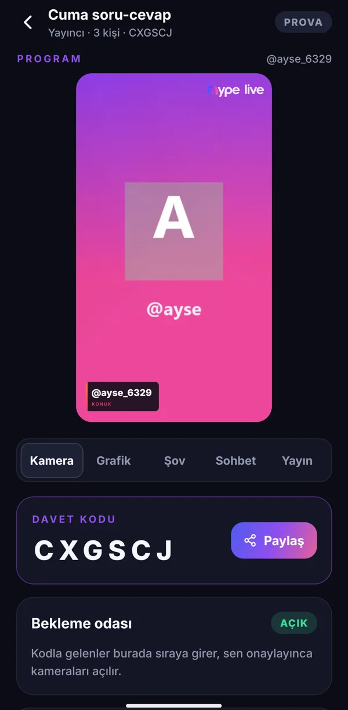
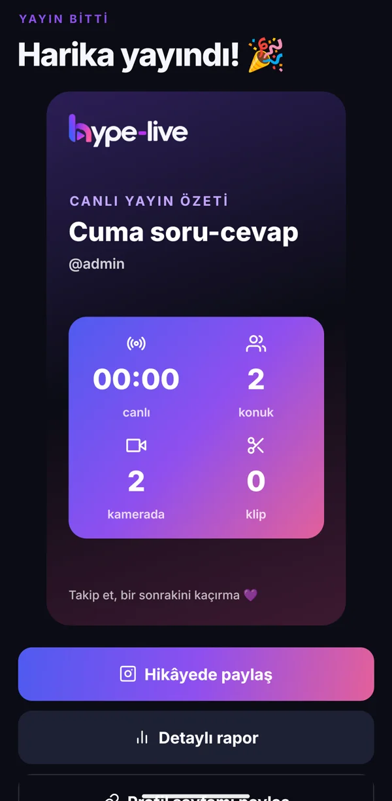
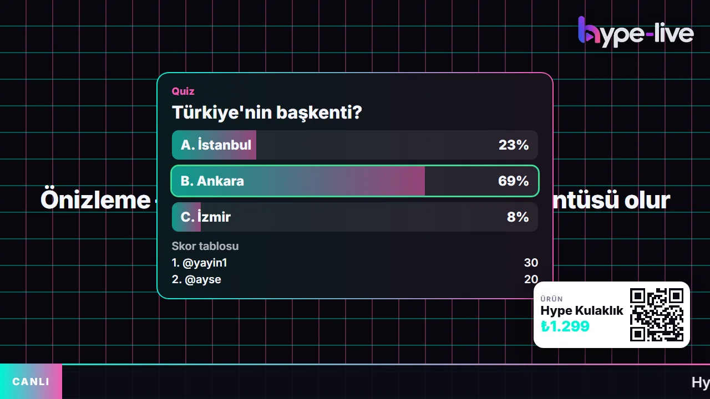
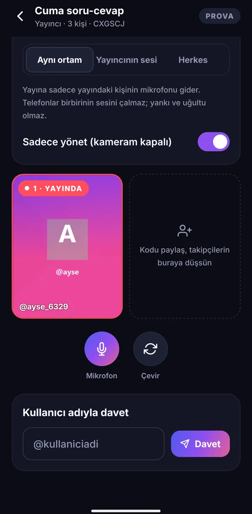
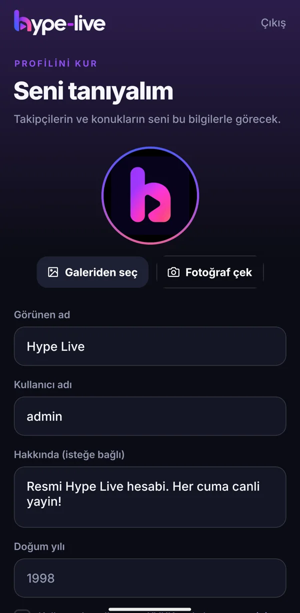

Yayını aç, 6 haneli kodu paylaş. Takipçilerin telefonlarından — uygulama olmadan, tarayıcıdan bile — kameralarıyla katılır. Kimi yayına alacağına sen karar verirsin; görüntü grafiklerle birlikte YouTube, Instagram ve TikTok'a gider.
Aşağıdaki ekranlar uygulamanın kendisinden alındı. Dekor yok, kurgu yok.

01
Yayını aç
Yayına bir ad ver. Uygulama 6 haneli bir davet kodu üretir.

02
Kodu paylaş
Hikâyende, WhatsApp'ta ya da yayın ekranında QR olarak.

03
Bekleme odası
Kodu giren takipçi sıraya düşer. "Al" dersen kamerası açılır.

04
Yayına al
Kameraya dokun, program ona geçsin. İsim bandı kendiliğinden çıkar.

05
Özeti paylaş
Yayın bitince 9:16 özet kartı hazır — tek dokunuşla hikâyende.
İzleyici ne görür
Telefonda dokunursun, yayında belirir.
youtube.com/live · 1080p

Quiz: soruyu sorarsın, konuklar telefondan cevaplar. Doğru cevap ve puan tablosu yayında.

Özellikler
Cebindeki yayın masası
Kamera
Tek ve bölünmüş ekran. Kameraya dokun, yayına alsın; ikinci kişiye dokun, ekran ikiye bölünsün. Sessize al, çıkar, engelle.
Ses
Aynı odada yankı yok. "Aynı ortam" modunda yalnızca yayındaki kişinin mikrofonu gider. Yayıncının sesi ya da herkes modları da var.
Grafik
Logo, alt bant, kayan yazı, sponsor bandı. Marka rengini seç ya da tema mağazasından hazır tema kullan.
Şov
Anket, quiz, uçan emojiler. Konuk süresi, sıradaki konuk uyarısı, ürün vitrini ve jingle'lar tek sekmede.
Sahne
Başlıyoruz, mola, bitti. Geri sayımlı açılış ve mola ekranları; sahne açıkken konukların sesi yayına gitmez.
Sonrası
Rapor, klip, özet kartı. Kim ne kadar yayında kaldı, kaç konuk katıldı; dikey klipler Reels ve Shorts için hazır.
Profil
Takip ve planlama. Takipçilerin canlıya çıktığında bildirim alır; planladığın yayın için 15 dakika önce hatırlatma gider.
Konuklar için
Uygulama şart değil.
Linke ya da yayındaki QR'a dokunan takipçi tarayıcıda açılan sayfaya adını yazar, onay kutusunu işaretler ve kamerasıyla sıraya girer. Yayındayken tepki gönderir, ankete oy verir, quiz'e cevap verir.
Her konuk, görüntüsünün yayınlanacağını katılmadan önce onaylar
13 yaş altı katılamaz, onay kaydı tutulur
Yayıncı istemediği kişiyi çıkarıp kalıcı engelleyebilir

Fiyat
Ücretsiz başla, büyüyünce Pro'ya geç
Ücretsiz
Pro
Konuk
2
Sınırsız
Yayın süresi
30 dakika
Sınırsız
Platform
1
Aynı anda birden fazla
Şov araçları
Var
Var
Kendi logon
—
Var, filigransız
Kayıt ve klip
—
Var
Ajans mısın? Birden çok yayıncıyı tek panelden izle, toplu rapor al. Bize yaz →
Sık sorulanlar
Merak edilenler
Konukların uygulamayı indirmesi gerekiyor mu?
Hayır. Uygulaması olan kodla girer; olmayan, paylaştığın linke ya da yayındaki QR'a dokunup tarayıcıdan kamerasıyla katılır.
Instagram ve TikTok'a nasıl yayın yapılıyor?
Uygulamadaki adım adım rehberle platformun verdiği yayın adresini ve anahtarını yapıştırırsın. YouTube'a doğrudan çıkılır.
Aynı odadaki telefonlar birbirinin sesini çalar mı?
"Aynı ortam" ses modunda yalnızca yayındaki kişinin mikrofonu yayına gider; yankı ve uğultu olmaz.
Konuğun görüntüsü izinsiz yayınlanır mı?
Hayır. Her konuk katılmadan önce görüntüsünün canlı yayınlanacağını onaylar ve bu onay kaydedilir.
iPhone'da çalışıyor mu?
Yayıncı uygulaması şu an Android'de. iPhone kullanan konuklar tarayıcıdan katılabilir.
İlk yayınını bugün aç.
Android uygulamasını indir, hesabını aç, profilini kur. İki dakikada hazırsın.